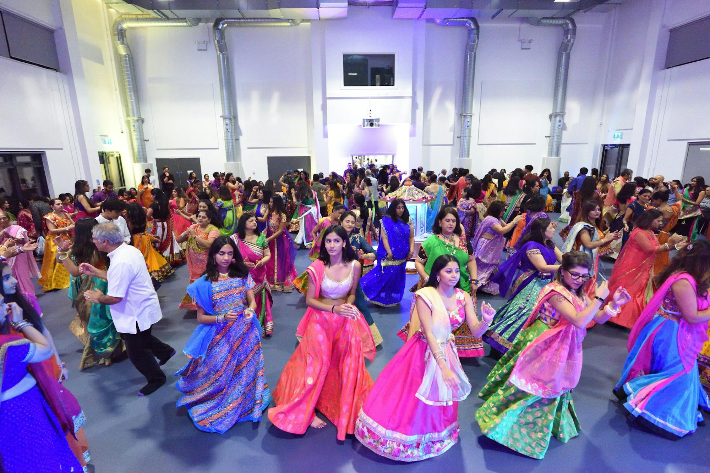

🪔
Nightly Aarti
Every evening begins with aarti and prayers to Maa Amba around the mandvi.
Shree Vishwakarma Navratri Committee · South London
નવરાત્રિ મહોત્સવ · જય અંબે માં
Sun 11 – Mon 19 October • 7:30pm till late • St Mark's Academy, Mitcham
About us
The word ‘Suthar’ has, in its modern usage, come to mean ‘carpenter’. Suthars are considered to be the descendants of the Hindu God Shree Vishwakarma, the divine artisan who created all that exists in the universe. Mainly concentrated in Gujarat, his descendants are spread across the world, all originating from the five sons of Vishwakarma — the Panchal brothers, who founded the five crafts.
Carpentry as a shared identity has long passed, but a sense of solidarity and religious affiliation remains. Since the 1980s, South London's Suthar families have come together every Navratri, and today a new generation of volunteers is carrying that tradition forward.

Entry is free for the Suthar community and Brahmin Samaj UK members. Children always go free.
Suthar & Brahmin Samaj UK members
Free
General public
£5/ night
Every child, every night
Free
Suthar & Brahmin Samaj UK members
Free
General public
£35/ season
2 adults, children free
£60/ season
The organisers reserve the right of admission.
Everyone on our committee volunteers their time. We're always looking for more help, so please get in touch.
Chair Person
A committee member for over 22 years. She introduced the 108 diva aarti on Aatham night and has sung raas and garba for 18 years.
Treasurer
Part of South London Navratri since day one, usually found in the kitchen. He's the man behind the daily masala tea and the jalebi gathia weekends.
Secretary
A volunteer for over ten years and a software engineer. He wants to bring the community back together so future generations don't forget where they came from.
Support us
This event has always been run without cost to the community. That has only been possible thanks to your generosity over the years. Hall hire costs have gone up significantly, so every donation, big or small, helps keep the celebrations going.
You can also donate in person at the front desk during any Navratri night.
To donate anonymously, use the reference OnlineDonation. Standing orders are very welcome.
We're refreshing our contacts database. Register your details so we can keep you updated about upcoming events, or send us a question.